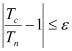
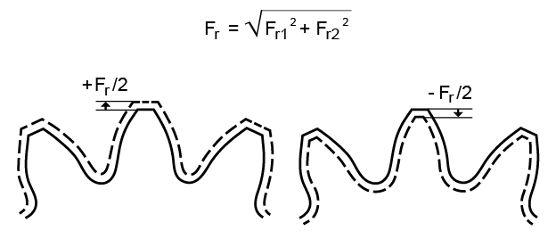
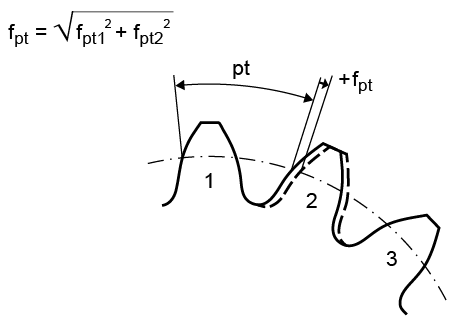
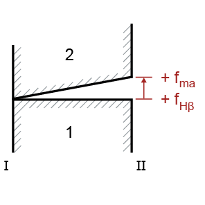

|
|
|


接触分析
在计算啮合路径时会考虑载荷。这还会计算齿向载荷分布系数 KHβ，使用 ISO 6336-1 附录 E 中定义的更精确方法。在这种情况下，啮合刚度可以根据 Weber/Banaschek [21]、ISO 6336-1 或 来计算（参见设置章中的"接触分析/齿向载荷分布系数"节）。
您可以在报告中查看计算结果，或选择 图形 > 接触分析 来显示它。接触分析既可以计算传动误差（作为啮合路径上的长度，单位为 mm），也可以计算旋转角度误差（作为从动齿轮上的角度，单位为 °）。
分辨率
您可以为分辨率选择 "自定义输入"、"低"、"中"、"高" 或 "很高" 等级。分辨率定义了收敛条件的终止准则 ε（10^-3 到 10^-6）。

Tc= 计算扭矩，
Tn= 公称转矩
接触分析的公称转矩以及离散化模型的切片数（参见接触分析理论节）。切片数会根据齿轮几何形状和所选分辨率自动设置。所选分辨率越高，自动定义的切片数就越多。您还可以通过将计算精度设置为 "自定义输入" 并点击其旁边的加号按钮来手动输入步数、切片数和齿距数。所输入的步数是每个齿距的步数。
部分载荷与载荷系数
可以在"用于计算的载荷 Wt"中输入部分载荷。在计算轴的变形和计算公称转矩时，都会考虑部分载荷。通过选择 并输入 ISO 系数 kΑ、Kγ 和 Kν，可以对部分载荷进行缩放。要按 ISO 执行计算，请将 设置为 ‚KΑKγKν‘。"所得部分载荷系数 W't" 字段显示用于接触分析的最终部分载荷。
如果选中 选项，则使用 选项卡中定义的载荷谱之一来计算接触分析。要考虑各个载荷区间，您必须选择 选项卡中带 选项的元素。当考虑载荷谱时，主动轮、工作齿面和旋转方向的配置会根据载荷区间的代数符号而变化。
摩擦系数
如果已定义"摩擦系数"，则接触分析会使用摩擦力 Fr 计算功率损失。点击"摩擦系数"右侧的选型按钮，可根据 ISO/TS 6336-22 对摩擦系数进行选型。当对摩擦系数进行选型时，接触分析中会考虑部分载荷和载荷系数。假定啮合中各齿面之间的摩擦系数为常数。
跳动误差
您可以在此处输入跳动误差 Fr。然后，该误差将作为中心距的修正量纳入接触分析。您应始终在该列表框中分别使用正跳动误差和负跳动误差各执行一次计算。

单个法向齿距偏差
您可以在此处预定义单个法向齿距偏差 ƒpt。然后，程序会为单个法向齿距偏差计算一个建议值。该值可以带正号或负号输入。然后，针对距离过大或过小的情况输出结果。当考虑单个法向齿距偏差时，接触分析在两个齿距上进行。
注意：
如果所选的单个法向齿距偏差相对于部分载荷过大，则可能出现数值问题。

制造偏差
要考虑制造误差（fpar、ΣfHβ）的影响，请在 选项卡的"制造公差"下拉列表中选择一个合适的值。
制造误差会增大法向齿面方向上的齿面间隙。

图 15.90：制造误差 fma 和 fHβ 正方向的定义
此处假定误差呈线性分布，因此侧面 I 上的制造误差为 0，在侧面 II 上达到最大值，并沿齿宽呈线性递增。制造误差成对考虑，可为正值或负值。
中心距与中心距公差
"中心距"字段显示用于计算的中心距。它对应于列表框中的中心距，即"中心距公差"、三个中心距公差（下/中/上）之一，或名义中心距，或用户定义的中心距。
磨损
您可以使用磨损迭代功能来更详细地定义沿齿面的磨损，因为它会使用磨损后的齿面执行多个接触分析步骤。但是，这会显著增加此计算运行所需的时间。点击 复选框以选择此选项。
您可以输入每一步允许的最大磨损。在下面所示的接触分析中，通过仅应用最大允许磨损，缩短了一次迭代后的使用寿命。在接触分析过程的下一步中，会考虑带磨损的齿形。重复该过程，直到达到总使用寿命。
在模块特定设置（ 选项卡）中，您可以选择定义迭代磨损计算结果的平滑程度。
锥形变位系数
如果选中此选项（在 选项卡中），则 中的变位系数可以被覆盖，并且可以相对于齿轮 1 向齿轮副添加一个锥形变位。当与轴向偏移一起使用时，这可以减小轮齿间隙。
Contact analysis
The load is taken into account when calculating the path of contact. This also calculates the face load factor KHβ using the more precise method defined in ISO 6336-1, Annex E. In this case, the meshing stiffness can be calculated either according to Weber/Banaschek [21], ISO 6336-1 or (see "Contact analysis/Face load factor" section in the Settings chapter).
You can view the calculation results in the report or select Graphic > Contact analysis to display it. The contact analysis can calculate either the transmission error as a length on the path of contact in mm or the angle of rotation error as an angle on the driven gear in °.
Resolution
You can select the levels "Own Input", "low", "medium", "high" or "very high" for the resolution. Resolution defines the termination criterion of the convergence condition, ε (10^-3 to 10^-6).
Tc= the calculated torque and
Tn= nominal torque
of the contact analysis and the number of slices of the discretized model (see the Theory of contact analysis section). The number of slices is automatically set according to the gear geometry and the selected resolution. The higher the selected resolution, the higher the number of slices that are defined automatically. You can also enter the number of steps, slices and pitches manually by setting the accuracy of calculation to "Own input" and clicking the Plus button next to it. The number of steps entered is per pitch.
Partial load and load factors
The "Partial load for calculation Wt" can be input for the load. The partial load is taken into account both when calculating the shaft deformation and when calculating the nominal torque. The partial load can be scaled by selecting and entering ISO coefficients kΑ, Kγ, and Kν. To perform the calculation according to ISO, set to ‚KΑKγKν‘. The "Resulting partial load factor W't" field shows the resulting partial load used for the contact analysis.
If the option is selected, contact analysis is calculated using one of the load spectra defined in the tab. To take into account individual load bins, you must select the element with the option in the tab. When load spectra are taken into account, the configuration of the driving wheel, the working flank, and the direction of rotation, change according to the load bin's algebraic sign.
Coefficient of friction
If a "coefficient of friction" has been defined, the contact analysis calculates the power loss using the friction force Fr. Click on the Sizing button to the right of the "Coefficient of friction" to size the coefficient of friction according to ISO/TS 6336-22. The partial load and the load factors are then taken into account in the contact analysis when the coefficient of friction is sized. The coefficient of friction between the flanks is assumed to be a constant in the meshing.
Runout error
You can enter the runout error Fr here. This is then included in the contact analysis as a modification to the center distance. You should always perform a calculation with a positive and a negative runout error in the selection list with that name.
Single normal pitch deviation
You can predefine the single normal pitch deviation ƒpt here. The program them calculates a proposed value for the single normal pitch deviation. This can be entered with either a positive or negative prefix operator. The results are then output for the case that the distance is too large or small. The contact analysis is performed over two pitches when single normal pitch deviation is taken into account.
Note:
Numerical problems may arise if the selected single normal pitch deviation is too large relative to the partial load.
Manufacturing deviation
To take the effect of manufacturing errors (fpar, ΣfHβ) into account, select an appropriate value from the "Manufacturing allowances" drop-down list in the tab.
The manufacturing error increases the flank gap in the normal flank direction.
Figure 15.90: Figure: Definition of the positive direction of manufacturing errors fma and fHβ
A linear error distribution is assumed here so that the manufacturing error on side I is 0, is at its maximum on side II, and increases in a linear progression along the facewidth. Manufacturing errors are taken into account in pairs either positively or negatively.
Center distance and center distance tolerance
The "Center distance" field displays the center distance used for the calculation. This corresponds to the center distance in the selection list, either the "Center distance tolerance", the three center distance allowances (lower/middle/top) or the nominal center distance or the center distance defined by the user.
Wear
You can use the wear iteration function to define wear along the tooth flank in more detail because it performs several steps of the contact analysis with the worn tooth flank. However, this does significantly increase the time it takes this calculation to run. Click the checkbox to select this option.
You can input the maximum permitted wear per step. In the contact analysis shown below, the service life after one iteration was reduced by only applying the maximum permissible wear. In the next step in the contact analysis process, the tooth form with wear is taken into account. The process is repeated until the total service life is reached.
In the Module specific settings ( tab), you have the option of defining the extent to which the results of the iterative wear calculation are to be smoothed.
Conical profile shift coefficients
If this option is selected (in the tab), the profile shift coefficients in the can be overwritten, and a conical profile shift can be added to the gear pair with reference to gear 1. When used together with an axial offset, this can reduce the toothing clearance.